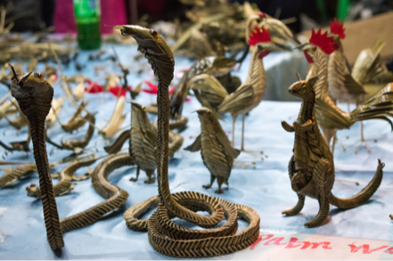
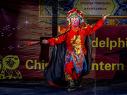
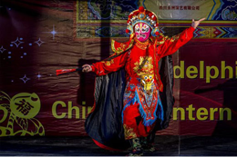
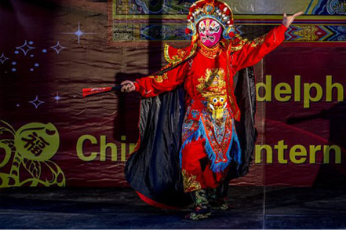
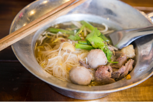
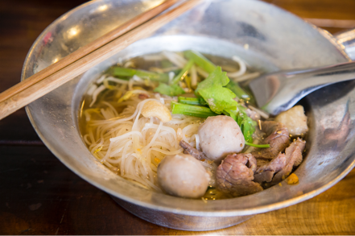

Get ready to experience Columbus in a whole new light with exquisite silk lanterns, traditional performances, and Asian-inspired cuisine!
The Ohio Chinese Lantern Festival will light up the Natural Resources Park with 39 larger-than-life illuminated displays crafted by Chinese artisans. Our team of artisans hail from Zigong, Sichuan, China’s cultural capital for the ancient art of lantern-making.
In addition to lanterns, nightly performances, and handicrafts, the event will also offer food and beverages. Our menu includes a variety of Chinese and traditional fair food, as well as assorted beverages.
Features
-
Ohio Chinese Lantern Festival boasts 39 beautiful lantern displays ranging from a 200 feet long illuminated dragon to glowing tulip-lined walk ways. The lanterns are created by hand using silk fabric, steel frames, and tens of thousands of LED lights.
-

Each night, artists will showcase traditional Chinese crafts, which will also be for sale. Handicrafts include palm leaves weaving, sugar painting, and Shu embroidery.
-



Our Chinese performers have decades of experience and offer a glimpse of Chinese stage culture. Some traditional Chinese acts featured include: jar balancing, kicking bowls on a rolling board, Chinese face-changing, martial arts, and umbrella juggling.
-


We will be offering traditional Chinese Food and beverages as well as traditional American fair food. Experiencing Chinese culture is not complete without tasting traditional food!
Where?
The Ohio Chinese Lantern Festival is being held within the Natural Resources Park at the Ohio State Expo Center and Fairgrounds, located at 717 E 17th Ave, Columbus, OH 43211. There is ample parking on site, and festival parking is $5.
When?
This event will be held nightly on November 28 - January 8 from 5:00 PM - 10:00 PM. We will even be open on Holidays!
Ticket Info
Tickets are available online or at the door, no advance purchase is necessary.
- $15 ADULTS - 18 and older
- $10 YOUTH - 17 and under (kids 2 and under free)
- $12 MILITARY - ID Required
- $40 FAMILY 4-PACK: (2 adult and 2 youth tickets)
Senior discounts (65+) are available on Mondays - $12 admission.
College discounts (ID required) are available on Thursday - $12 admission.
GROUP SALES:
Discounted group rates are available for groups with 15 or more guests.
Please contact grouops@ohiolanternfestival.com for group ticket sales.
ONSITE BOX OFFICE HOURS:
4:30pm-9:30pm